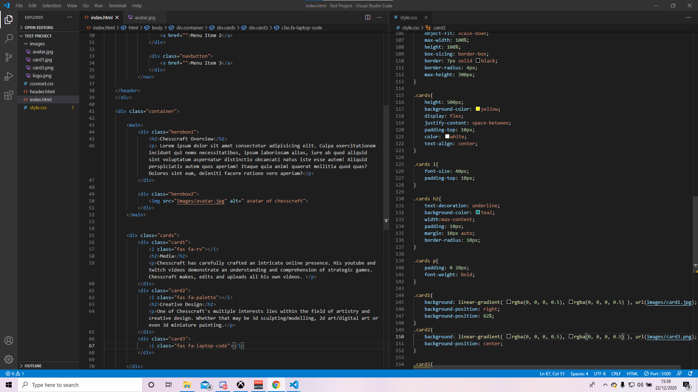

Works In Progress
Hello and welcome, to the wip page. Here you will be able to see directly what Chesscraft is currently working on as of this moment. In order to keep this page short and sweet due to the nature of this page needing content to shift around constantly as projects are finished or put on hold, Chesscraft will only post the exact details of Projects he is currently working on for each category and nothing else. I.e. he will not talk about projects that will begin as soon as other projects are done. This will be done in the Future Projects section instead. Once a project is finished, they will then be posted to the finished projects page. Some projects may be on hold; but are still considered wips if there is no other project going on in that category.
MEDIA: Celeste Playthrough
Having already finished my playthrough of Celeste up to the Mountain level, all that's left for Chesscraft right now is to parse through all the twitch vods to select the right videos and then further split them up in shotcut with some minimal editing. Right now am currently facing the issue of low disk space, so this project will require either a lot of shuffling of files or the deletion of older files to make space for new ones.
Status: Main Project
ART: 2d Digital Playaround
Chesscraft needs to familiarise himself more with the tools and software in regards to 2D software. Currently he still suffers from executive dysfunction and other issues preventing him from making art. Hence he will be trying to begin tearing this wall down, by having a no pressure environment in which he can doodle random thoughts and ideas with no consequence or judgement.
Status: Secondary Project
TECH: Finish up website

With the first draft of the website complete, there are still quite a few knicks and bits to work out. These include, but are not limited to - the improvement of the aesthetics of each page, the spacing between content, any weird margins etc., making the code more readable, and trying to reduce the amount of code written where appropriate. There will also need to be maintenance work done, keeping everything up to date and adding content (i.e. images).
Status: Background Project
WRITING: IMMORTAL fanfic chapter
On hold due to executive dysfunction being incredibly distracting and harmful to me in terms of writing right now.
Status: On HOLD
Hobby: Crochet
Chesscraft would love to learn how to Crochet, his current goal in terms of Crocheting is to be able to read patterns and execute them from other sources. Once this is achieved, he can begin thinking about creating his own patterns and making his own toys etc. for things like IMMORTAL fan toys.
Status: On HOLD